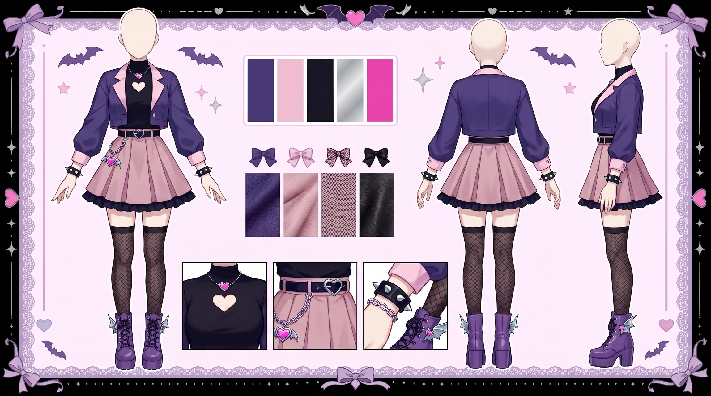
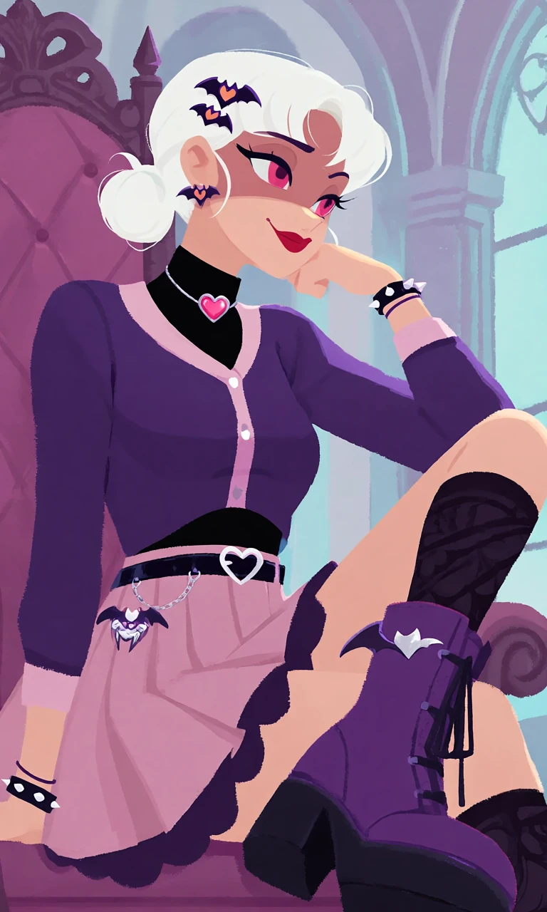
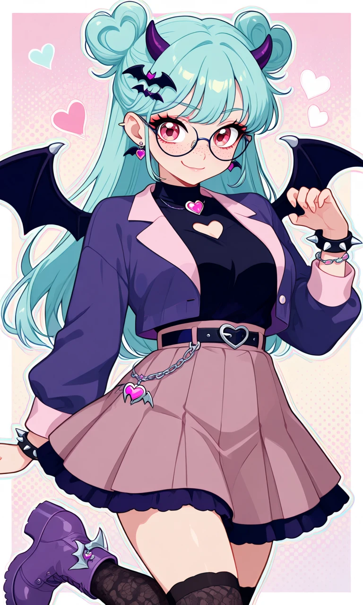

Batwing Crush

Outfit Prompt
She wears a fashionable pastel-goth vampire-inspired outfit: a short fitted deep-purple cardigan with pale-pink lapels and cuffs over a black high-neck blouse with a small heart-shaped opening at the collar, a high-waisted dusty-pink pleated skirt with a subtle dark-purple underskirt, patterned black knee-high socks, and chunky purple ankle boots decorated with tiny silver bat-wing accents.
A narrow black belt with a heart-shaped buckle circles her waist, with a small decorative chain and fake vampire-fang charm hanging from one side. She wears a thin black choker with a pink heart gemstone, small purple bat earrings, a couple of cute spiked bracelets, and black-and-purple bat hair clips beside one heart-shaped bun.
Her overall fashion is cute teenage pastel goth mixed with an enthusiastic homemade vampire aesthetic—more mature and fashionable than her childhood gothic-lolita clothing, but still more playful and experimental than her confident adult style. Purple, black, dusty pink and aqua color palette, cute anime fashion design.
Outfit Examples



